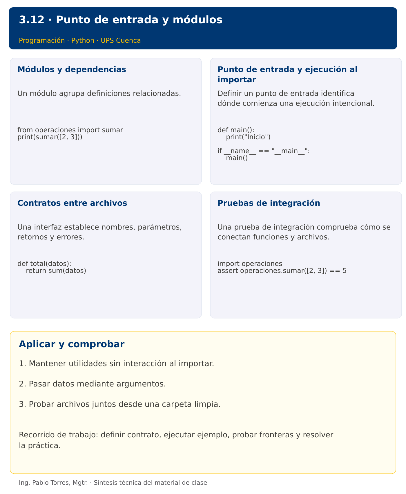

Programación

3.12 · Punto de entrada y módulos · Python
Autor: Ing. Pablo Torres, Mgtr.
Unidad 3: Lenguaje de Programación
Conceptos · Demostración · Práctica de clase · Lo esencial
Contexto. Separar cálculo, presentación y punto de entrada permite reutilizar operaciones sin ejecutar automáticamente una sesión interactiva. Organizar responsabilidades debe reducir acoplamiento, no solo aumentar el número de archivos.
Prerrequisitos. Funciones, registros, archivos y manejo de errores.
1. Conceptos y ejemplos
1.1. Módulos y dependencias
Un módulo agrupa definiciones relacionadas. Una dependencia aparece cuando un archivo utiliza operaciones definidas en otro. Definir una dirección clara: la entrada llama a operaciones, y las operaciones no importan la entrada para pedir datos. Evitar nombres de archivo que oculten bibliotecas estándar. Mantener interfaces pequeñas y documentadas.
Aplicar en Python. Cada archivo .py puede importarse como módulo. import operaciones conserva el prefijo del módulo; from operaciones import sumar importa un nombre concreto. Evitar import * porque oculta el origen de los nombres. Un archivo llamado random.py puede ocultar el módulo estándar random.
from operaciones import sumar
print(sumar([2, 3]))
1.2. Punto de entrada y ejecución al importar
Definir un punto de entrada identifica dónde comienza una ejecución intencional. Importar utilidades no debería pedir datos ni imprimir informes. Mantener datos de ejemplo y coordinación en la entrada. Esta separación permite probar funciones y reutilizarlas sin efectos inesperados.
Aplicar en Python. Usar def main() y el guard if name == "main": main(). Al importar, name toma el nombre del módulo. El guard protege únicamente su bloque; otras instrucciones en el nivel superior todavía se ejecutan.
def main():
print("Inicio")
if __name__ == "__main__":
main()
1.3. Contratos entre archivos
Una interfaz establece nombres, parámetros, retornos y errores. Cambiarla afecta a quienes la utilizan. Si transformar retorna una lista, mostrar debe recibir esa lista; no llamar a mostrar con el resultado de otra función que solo imprime. Mantener datos en un lugar y pasar argumentos para evitar variables globales compartidas.
Aplicar en Python. No depender de variables del módulo main desde una función utilitaria. Recibirlas como parámetros. Las importaciones circulares pueden dejar módulos parcialmente inicializados. Reorganizar responsabilidades en lugar de agregar importaciones dentro de todo el código.
def total(datos):
return sum(datos)
1.4. Pruebas de integración
Una prueba de integración comprueba cómo se conectan funciones y archivos. Ejecutar desde una carpeta limpia detecta dependencias ocultas de archivos o estado. Probar la importación sin salida y luego ejecutar la entrada con datos conocidos. Registrar versiones y comandos exactos para repetir el resultado.
Aplicar en Python. Usar python3 -c "import operaciones" para comprobar que importar utilidades no imprime ni solicita datos. Las pruebas con unittest forman parte de la biblioteca estándar. No entregar pycache como fuente.
import operaciones
assert operaciones.sumar([2, 3]) == 5
Los bloques breves anteriores ilustran una operación y pueden requerir variables o imports del contexto. Utilizar la demostración siguiente como programa completo.
Síntesis visual

2. Demostración guiada
Problema. Separar la función sumar en un archivo utilitario y llamarla desde el punto de entrada con [4,7,2].
Contrato de esta demostración. La utilidad recibe una secuencia de enteros y retorna su suma, con cero para la secuencia vacía. No leer ni imprimir al importar la utilidad. Definir datos y presentación en la entrada. Incluir ambos fuentes para ejecutar.
Fuente: ejemplos/demo.py.
from operaciones import sumar
def main():
datos = [4, 7, 2]
print(f"Total: {sumar(datos)}")
if __name__ == "__main__":
main()
Archivo complementario: ejemplos/operaciones.py.
def sumar(datos):
total = 0
for valor in datos:
total += valor
return total
Ejecutar
Abrir una terminal dentro de 03/3.12-main-modulos/python/ejemplos/ y ejecutar:
python3 demo.py
En Windows, usar py en lugar de python3 si esa es la instalación disponible. Comprobar primero su versión.
Salida esperada
Total: 13
Interpretación. Seguir las asignaciones y los bloques en orden, identificar qué instrucción produce cada línea y contrastar con el contrato. Modificar un dato por vez y anticipar el resultado antes de ejecutar. La salida de referencia es una expectativa; el registro de verificaciones indica qué ejecuciones se realizaron.
Ejercicios prácticos progresivos
Resolver los siguientes ejercicios en orden. Entregar enunciado, fuente y resultado propio. Los casos mostrados permiten comprobar el contrato y no sustituyen una prueba adicional de frontera.
Ejercicio 01. Entrada explícita
Definir main que muestre “Inicio” y llamarla mediante el guard de ejecución. En Java utilizar main estático.
Caso de comprobación:
Inicio
Ejercicio 02. Cálculo separado
Definir sumar(a,b) y utilizarla desde main para sumar 4 y 6.
Caso de comprobación:
10
Ejercicio 03. Presentación separada
Definir calcular_doble y mostrar. Coordinar desde main para 7.
Caso de comprobación:
Resultado: 14
Ejercicio 04. Sin globales
Calcular total de [2,5,8] mediante una función que reciba los datos. Definir los datos exclusivamente en main.
Caso de comprobación:
15
Ejercicio 05. Cadena de procesamiento
Normalizar “ sol ” y mostrar el resultado desde main, sin imprimir dentro de normalizar.
Caso de comprobación:
SOL
Ejercicio 06. Error en la frontera
Definir dividir que lance error para divisor cero. Gestionarlo en main con datos 4 y 0.
Caso de comprobación:
Divisor cero
Ejercicio 07. Módulo utilitario real
Crear temporalmente operaciones.py con suma(a,b), importarlo sin salida y utilizar suma(3,4). En Java crear Operaciones.java y compilar ambos fuentes.
Caso de comprobación:
7
Ejercicio 08. Importación sin interacción
Crear un módulo con main protegido. Importarlo y comprobar que no produjo salida. Mostrar “Importación limpia” al terminar.
Caso de comprobación:
Importación limpia
Ejercicio 09. Integración de funciones
Filtrar pares, elevarlos al cuadrado y mostrarlos desde main para [1,2,3,4]. Separar tres responsabilidades.
Caso de comprobación:
4 16
Ejercicio 10. Ejecución en proceso nuevo
Crear temporalmente util.py y main.py. Ejecutar main.py en un proceso nuevo y obtener “Total: 6” para [1,2,3]. En Java compilar utilidades y entrada juntas.
Caso de comprobación:
Total: 6
3. PC3.12 · Práctica de clase
Crear main.py, texto_utils.py y datos_utils.py. Implementar funciones para normalizar nombres, filtrar registros por cantidad mínima y presentar resultados desde main. No leer ni imprimir al importar utilidades. En Java, crear Demo.java, TextoUtils.java y DatosUtils.java con responsabilidades equivalentes. Entregar una versión y comprobar los mismos casos.
Requisitos y restricciones
- Resolver en una sola versión, Python o Java.
- Mantener nombres y responsabilidades indicados; explicar cualquier adaptación idiomática.
- Aplicar únicamente los conceptos ya introducidos.
- Conservar las entradas cuando el enunciado lo exija.
- Distinguir valores fuera de contrato de errores que el programa debe gestionar.
Casos de aceptación de la PC
| Entrada / escenario | Resultado esperado |
|---|---|
| [(" sol ",3),("LUNA",1)], mínimo=2 | SOL |
| [], mínimo=2 | Sin datos |
| importar utilidades | sin salida ni solicitud de entrada |
| mínimo negativo | error de argumento |
Probar y registrar evidencia
Crear una carpeta personal PC3.12 separada de las demostraciones. Guardar cada caso con entrada, resultado esperado y resultado real. Ejecutar python3 solucion.py desde esa carpeta. Para entradas de teclado, guardar casos/entrada-01.txt y redirigirla con < casos/entrada-01.txt. Para funciones, crear llamadas con los datos de la tabla.
- Registrar
evidencias/PC3.12.mdcon comandos, versión real, salidas y explicación. - Crear un commit funcional como
feat(pc3.12): implementar-regla-principal. - Obtener el hash real con
git rev-parse HEADy anotarlo en la evidencia. - Revisar el cambio con
git show HASHy comparar avances congit diff HASH_ANTERIOR HASH_ACTUAL. Sustituir los marcadores por hashes reales. - Agregar una prueba de frontera distinta de las incluidas y justificar qué error detectaría.
No se requiere proyecto acumulativo ni rúbrica individual de esta PC.
Lo esencial
- Mantener utilidades sin interacción al importar.
- Pasar datos mediante argumentos.
- Probar archivos juntos desde una carpeta limpia.